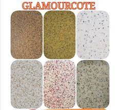
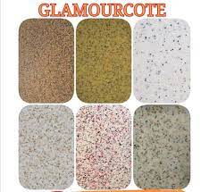

OUR FINISHED PRODUCTS FOR OUR COMPANY
At Gamazine & Glamour Coating, we take pride in delivering exceptional coating solutions that protect and beautify your surfaces. Our extensive range of products has been tested and proven in various applications across residential, commercial, and industrial sectors.
Glamour Coating Products
WE OFFER A WIDE RANGE OF GLAMOUR COATING PRODUCTS TO MEET YOUR NEEDS.
About Glamour Coating
Glamour coating is a premium surface treatment designed to provide exceptional aesthetic appeal while offering superior protection. This advanced coating system is perfect for both interior and exterior applications, delivering a smooth, durable finish that resists weathering, UV rays, and daily wear and tear.
Key Features of Glamour Coating:
- Long-lasting durability - up to 15 years of protection
- Weather resistant - withstands extreme temperatures and moisture
- UV protection - prevents fading and deterioration
- Easy maintenance - simple cleaning with soap and water
- Multiple color options - customizable to your preferences
- Eco-friendly formulation - low VOC and environmentally safe
- Quick application - minimal disruption to your schedule
Applications:
Glamour coating is suitable for walls, ceilings, concrete surfaces, metal structures, wood surfaces, and decorative elements. It's ideal for homes, offices, retail spaces, warehouses, and outdoor structures.

 



Glamour Coating Process:
Our professional application process includes surface preparation, primer application, base coat application, finishing coat, and quality inspection. Each step is carefully executed to ensure optimal adhesion and long-lasting results.
Gamazine Coating Products
WE OFFER A WIDE RANGE OF GAMAZINE COATING PRODUCTS TO MEET YOUR NEEDS.
About Gamazine Coating
Gamazine coating is an industrial-strength protective system specifically engineered for demanding applications. This heavy-duty coating provides exceptional resistance to corrosion, chemicals, and mechanical damage, making it the ideal choice for harsh environments and high-traffic areas.
Key Features of Gamazine Coating:
- Superior corrosion resistance - protects against rust and oxidation
- Chemical resistance - withstands exposure to acids, alkalis, and solvents
- High durability - withstands heavy mechanical stress
- Temperature stability - performs in extreme temperature conditions
- Waterproof barrier - complete moisture protection
- Fire resistance - enhanced safety properties
- Industrial grade - meets stringent quality standards
Applications:
Gamazine coating is perfect for industrial equipment, storage tanks, pipelines, bridges, marine structures, chemical processing facilities, and any surface requiring maximum protection against harsh conditions.


Gamazine Coating Process:
Our specialized application process includes thorough surface preparation, sandblasting or chemical cleaning, primer application, multiple coating layers, and comprehensive quality testing. This ensures maximum adhesion and protection performance.
Quality Assurance
All our coating products undergo rigorous quality testing to ensure they meet international standards. We provide comprehensive warranties on our work and use only certified materials from trusted suppliers.
Maintenance Guidelines
To maximize the lifespan of your coating system, we provide detailed maintenance instructions and offer annual inspection services. Proper maintenance can extend the life of your coating by several years.
Environmental Commitment
Both our Glamour and Gamazine coating products are formulated with environmental responsibility in mind. We use low-VOC formulations and sustainable application practices to minimize environmental impact.
Technical Specifications
Detailed technical data sheets are available for all our products, including coverage rates, drying times, temperature requirements, and performance specifications. Contact us for complete technical documentation.
Warranty Information
We stand behind our products with comprehensive warranties. Glamour coating comes with a 7-year warranty, while Gamazine coating includes a 10-year warranty against defects in materials and workmanship when properly applied and maintained. As we establish our track record, we are confident in the quality of our work and materials.